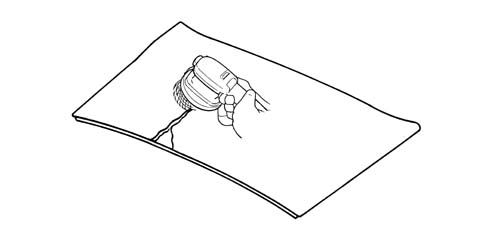
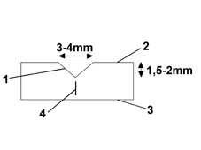
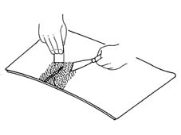

Introduction - SUN ROOF AND HOOD
- Path
- Descriptions > 70 FITTINGS > 7030 SUN ROOF AND HOOD > Introduction - SUN ROOF AND HOOD
- Kind
- system description
- Applies to
- all engines; all production periods
- Interactive page
- https://sloeber94.github.io/elrnDB-fDbl/en/#/2585426
Applies to: all engines; all production periods
The roof spoiler consists of an aesthetic trim and a frame.
The material used for both is polyester reinforced with fibreglass. This is compression-moulded in the case of the trim and injection moulded in the case of the frame.
The compression-moulded part is made out of pre-impregnated sheets produced by combining a fibreglass reinforcement and a resin that has already been charged, dyed and catalysed. The prepared sheets are cut to the required shapes and placed inside hot moulds where catalysis takes place.
The injection-moulded parts are produced by injecting resin into a closed mould that already contains a dry fibreglass reinforcement; in some cases the resin and reinforcement (ground fibreglass) are mixed before being injected into the mould.
Plastics offer the benefits of improving vehicle aerodynamics, reducing weight (both these attributes help reduce fuel consumption) while also eliminating corrosion and minimising the possibility of impact damage.
Parts with large surface areas are reinforced with fibreglass to give them essential qualities of strength and rigidity.
Applies to: all engines; all production periods
General repair instructions
Some repairs can be carried out using suitable products because the composition of resins and polyesters reinforced with fibreglass are technically very similar to the composition of the initial part
Applies to: all engines; all production periods
Working temperature
These resins must not worked at temperatures below 15° Χ
Acceleration of setting time
Setting time can be accelerated:
- In a drying cabin
- Under a mobile infra-red drying lamp (at a minimum distance of 70cm from the repair area)
In any case, wait 15 to 20 minutes before subjecting the repair to a maximum temperature of 60° Χ
Applies to: all engines; all production periods
Cleanliness and protection
When sanding, use:
- A sander with a vacuum device (due to the dust generated and because of the presence of fibreglass)
- Protective goggles
- Rubber gloves
- Mask (to filter out organic dust)
- Watertight overalls
- Safety footwear (optional)
Applies to: all engines; all production periods
Rebuilding
When the repair is difficult to build up or places driver safety at risk, the damaged part must be replaced.
To repair a crack or deep scratch (that does not go right through the full thickness of the laminated part), proceed as follows:
1 Remove the roof spoiler, place on a work bench and sand the area to be repaired using a grinding wheel P180

Applies to: all engines; all production periods
Rebuilding
2 Chamfer the damaged part using a grinding wheel ( abrasive wheel P40)

1 Chamfer 2 External part 3 Internal part 4 Crack
Applies to: all engines; all production periods
Rebuilding
3 Use the following material for the repair:
- Polyester resin loaded with fibreglass
- Catalyser
Prepare sufficient resin for the repair and catalyse
4 Carefully mix the product and catalyser and use a spatula to cover the chamfered area entirely

Applies to: all engines; all production periods
Rebuilding
5. Remove any excess material using a grinding wheel (abrasive wheel P80)
6. Apply a layer of finishing filler (metal filler) to make the surface non-porous and uniform
7. Sand using a block and sandpaper. Use 200 grade first and finish with 600 grade.
Applies to: all engines; all production periods
Rebuilding
Lastly, touch up the paint using primer and enamel.